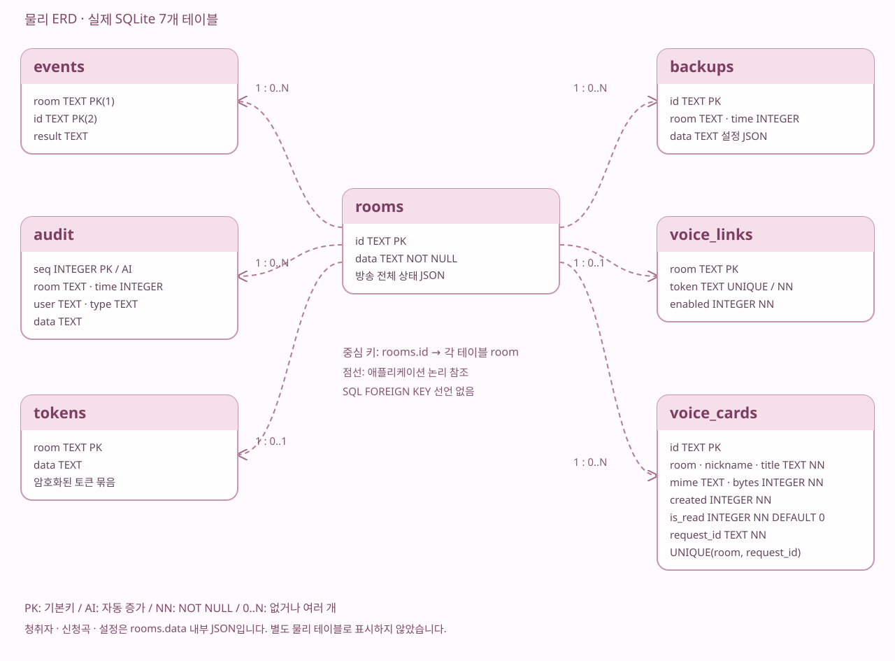
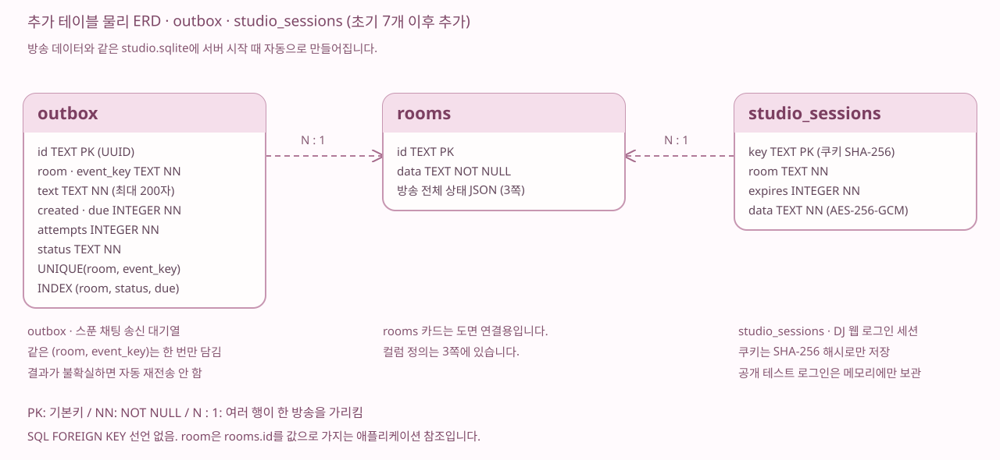
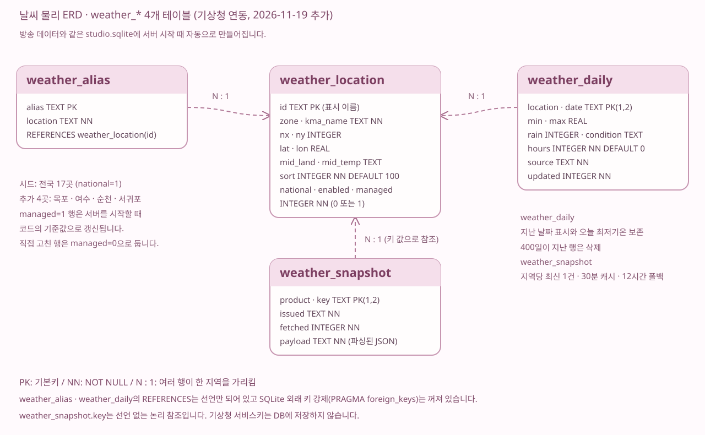
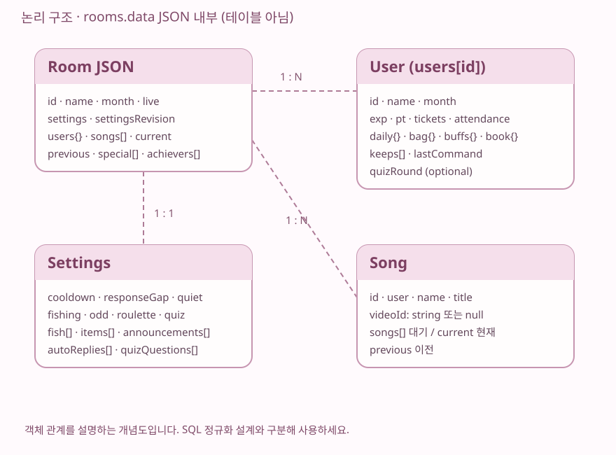

SQLite 테이블 13개(초기 7 · 추가 2 · 날씨 4) + 방송 상태 JSON
물리 ERD와 논리 구조를 구분합니다.
이 프로젝트는 모든 엔티티를 관계형 테이블로 분리하지 않습니다. rooms.data에 방송·청취자·설정·신청곡·보상 상태를 JSON으로 보관하고, 이벤트·기록·토큰·백업·음성은 별도 테이블에 둡니다.
| 구분 | 내용 |
|---|---|
| DB 파일 | 기본 data/studio.sqlite (DATA_DIR로 위치 변경 가능) |
| 엔진 | node:sqlite DatabaseSync / journal_mode=WAL / busy_timeout=5000 |
| 근거 | core.mjs · voice.mjs · sessions.mjs · weather-db.mjs의 CREATE TABLE |
| 키 주의 | FOREIGN KEY는 날씨 2개만 REFERENCES로 선언(강제 꺼짐). 나머지 관계선은 앱 참조입니다. |
| 범위 | 13개 테이블 모두 정의. 2쪽 ERD는 초기 7개만 그립니다. |
| 민감 데이터 | 암호화 토큰, 접수 링크 토큰, 음성 원본, 닉네임·활동 기록 |

PNG와 SVG 원본을 함께 제공합니다. 1 : 0..N은 방송 한 개에 관련 행이 없거나 여러 개임을 뜻합니다. 이 도면은 초기 7개 테이블이며, 추가 2개는 5쪽, 날씨 4개는 7쪽에 따로 그렸습니다.
rooms.id를 각 테이블의 room 값으로 사용하지만, DB 차원의 FOREIGN KEY·ON DELETE CASCADE는 없습니다. 참조 무결성·소유권은 애플리케이션에서 관리합니다. room은 별도 NOT NULL 표시가 없는 테이블에서는 DDL상 NOT NULL이 선언되어 있지 않습니다.
| 컬럼 / 제약 (DDL 기준) | 용도 |
|---|---|
| id · TEXT · PK data · TEXT · NOT NULL | 방송 전체 상태 JSON. Store.save에서 JSON.stringify, load에서 JSON.parse. |
| 컬럼 / 제약 (DDL 기준) | 용도 |
|---|---|
| room · TEXT · PK(1) id · TEXT · PK(2) result · TEXT | 방송과 외부 이벤트 ID별 처리 결과. 보상 중복 실행 방지. |
| 컬럼 / 제약 (DDL 기준) | 용도 |
|---|---|
| seq · INTEGER · PK AUTOINCREMENT room · TEXT time · INTEGER user · TEXT type · TEXT data · TEXT | 시간은 epoch ms. data는 행위 상세 JSON. 최근 200건 조회. |
| 컬럼 / 제약 (DDL 기준) | 용도 |
|---|---|
| room · TEXT · PK data · TEXT | Spoon 토큰 묶음을 암호화한 문자열. TOKEN_KEY는 별도 환경/로컬 키 파일. |
SQLite의 TEXT PRIMARY KEY를 일괄 NOT NULL로 표기하지 않았습니다. 명시적 NOT NULL 제약과 앱이 항상 값을 전달하는 관행은 구분합니다. JSON 문자열은 SQL CHECK(json_valid(...))로 강제하지 않습니다.
| 컬럼 / 제약 (DDL 기준) | 용도 |
|---|---|
| id · TEXT · PK room · TEXT time · INTEGER data · TEXT | 방송 설정 스냅샷 JSON. 사용자·음성 파일을 포함하는 전체 백업이 아님. |
| 컬럼 / 제약 (DDL 기준) | 용도 |
|---|---|
| room · TEXT · PK token · TEXT · UNIQUE NOT NULL enabled · INTEGER · NOT NULL | DJ별 접수 링크. 32바이트 난수의 64자리 hex token, enabled는 앱에서 0/1 사용. |
| 컬럼 / 제약 (DDL 기준) | 용도 |
|---|---|
| id · TEXT · PK room · TEXT · NOT NULL nickname · TEXT · NOT NULL title · TEXT · NOT NULL mime · TEXT · NOT NULL bytes · INTEGER · NOT NULL created · INTEGER · NOT NULL is_read · INTEGER · NOT NULL DEFAULT 0 request_id · TEXT · NOT NULL UNIQUE(room,request_id) | 음성 메타데이터. 파일 본문은 data/voice/{id}, DB BLOB 아님. |
UNIQUE(room, request_id)는 같은 방송의 재시도 업로드를 한 건으로 묶습니다. 파일 경로는 사용자 입력 경로가 아니라 생성된 UUID를 기준으로 정합니다. is_read의 0/1은 앱 규칙이며 SQL CHECK 제약은 없습니다.

초기 7개 이후에 추가된 채팅 송신 대기열(outbox)과 DJ 웹 로그인 세션(studio_sessions)입니다. 서버를 시작할 때 CREATE TABLE IF NOT EXISTS로 만들어집니다.
두 테이블은 방송 상태(rooms.data)와 별도로 둔 운영용 저장소입니다. room 값으로 방송을 가리키지만 FOREIGN KEY는 선언하지 않았고, 소유권은 애플리케이션이 확인합니다.
outbox.text에는 스푼 채팅으로 보낼 메시지 본문(최대 200자)이 들어갑니다. studio_sessions에는 쿠키 원문이 아니라 SHA-256 해시와 암호화된 세션만 저장합니다.
| 컬럼 / 제약 (DDL 기준) | 용도 |
|---|---|
| id · TEXT · PK room · TEXT · NOT NULL event_key · TEXT · NOT NULL text · TEXT · NOT NULL created · INTEGER · NOT NULL due · INTEGER · NOT NULL attempts · INTEGER · NOT NULL status · TEXT · NOT NULL UNIQUE(room,event_key) INDEX outbox_due(room,status,due) | 스푼 채팅 송신 대기열(outbox.mjs). 같은 (room, event_key)는 INSERT OR IGNORE로 한 번만 담고 text는 200자까지 저장합니다. status 흐름은 pending → sending(송신 직전 예약) → sent입니다. 방송 중이 아니거나 응답 간격이 안 맞으면(deferred) 5초 뒤 다시, 전송 제한(retry)은 5·10·20·40초 간격으로 최대 4회 재시도합니다. |
| 컬럼 / 제약 (DDL 기준) | 용도 |
|---|---|
| key · TEXT · PK room · TEXT · NOT NULL expires · INTEGER · NOT NULL data · TEXT · NOT NULL | DJ 웹 로그인 세션(sessions.mjs). key는 세션 쿠키 값의 SHA-256 해시이며 쿠키 원문은 저장하지 않습니다. data는 방송·CSRF 토큰·만료를 TOKEN_KEY로 AES-256-GCM 암호화한 문자열이고, 복호화한 room·expires가 행의 컬럼과 같아야 인정합니다. 만료(기본 12시간)된 세션은 1분 주기 정리 작업이 지웁니다. 공개 테스트 로그인은 이 테이블이 아니라 메모리에만 둡니다. |
outbox의 status는 pending · sending · sent · failed · uncertain · expired · cancelled이며 SQL CHECK 제약은 없습니다. uncertain은 송신 결과가 불확실해 자동 재전송하지 않는 상태로, DJ가 확인해 pending으로 되돌리거나 cancelled로 취소합니다. 10분 넘게 대기한 pending은 expired가 되고 끝난 행은 7일 뒤 삭제됩니다. 시각은 모두 epoch ms입니다.

기상청 연동(2026-11-19)으로 추가된 4개 테이블입니다. 서버를 시작할 때 CREATE TABLE IF NOT EXISTS로 만들어지며 별도 마이그레이션이 없고, 전체 백업(VACUUM INTO)에 함께 담깁니다.
날씨 테이블은 rooms.id를 참조하지 않는 독립 묶음입니다. 지역·별칭·응답 스냅샷·일별 기록만 담고 청취자 정보나 방송 상태는 담지 않습니다.
weather_alias.location과 weather_daily.location은 REFERENCES weather_location(id)를 선언했지만 SQLite 외래 키 강제(PRAGMA foreign_keys)는 켜지 않았습니다. weather_snapshot.key는 선언 없이 지역 id를 값으로 가집니다. 기상청 서비스키(KMA_SERVICE_KEY)는 DB가 아니라 환경 변수에만 둡니다.
| 컬럼 / 제약 (DDL 기준) | 용도 |
|---|---|
| id · TEXT · PK zone · TEXT · NOT NULL kma_name · TEXT · NOT NULL nx · INTEGER ny · INTEGER lat · REAL lon · REAL mid_land · TEXT mid_temp · TEXT sort · INTEGER · NOT NULL DEFAULT 100 national · INTEGER · NOT NULL DEFAULT 0 CHECK(national IN (0,1)) enabled · INTEGER · NOT NULL DEFAULT 1 CHECK(enabled IN (0,1)) managed · INTEGER · NOT NULL DEFAULT 1 CHECK(managed IN (0,1)) | 조회 지역 마스터(전국 17곳 + 추가 4곳). id는 표시 이름(서울·부산 등), zone은 기상청 1시간 단위 동네예보 RSS의 행정구역 코드 10자리입니다. kma_name은 그 코드에 기상청이 돌려줘야 하는 지역 표기이며, 응답과 다르면 사용하지 않습니다(기상청은 알 수 없는 코드에 오류 대신 기본 지역을 돌려줌). nx·ny는 동네예보 격자, lat·lon은 Open-Meteo 보충용 좌표, mid_land·mid_temp는 중기육상·중기기온 구역 코드입니다. national=1은 전국 목록, enabled=0은 조회 제외, managed=1은 서버 시작 때 코드의 기준값으로 갱신합니다(직접 고친 행은 0). |
| 컬럼 / 제약 (DDL 기준) | 용도 |
|---|---|
| alias · TEXT · PK location · TEXT · NOT NULL REFERENCES weather_location(id) | 별칭 → 지역 매핑(수원→경기, 전남광주통합특별시→광주 등). 서버 시작 때 INSERT OR IGNORE로 채우므로 직접 추가·수정한 별칭은 유지됩니다. |
시드는 weather-db.mjs의 전국 17곳과 추가 4곳입니다. 광주·전남은 2026-07 행정통합으로 코드가 12로 시작하는 값으로 바뀌어 반영했습니다. 지역을 추가할 때는 먼저 기상청 응답의 지역 표기가 kma_name과 같은지 확인하세요.
| 컬럼 / 제약 (DDL 기준) | 용도 |
|---|---|
| product · TEXT · NOT NULL key · TEXT · NOT NULL issued · TEXT · NOT NULL fetched · INTEGER · NOT NULL payload · TEXT · NOT NULL PRIMARY KEY(product,key) | 기상청 응답 캐시(재시작·장애 대비). 지역당 최신 1건(product=kma-hourly, key=지역 id)이며 파싱된 JSON을 payload에 둡니다. issued는 발표시각(YYYYMMDDHHmm), fetched는 epoch ms입니다. 30분 이내면 다시 요청하지 않고, 기상청 요청이 실패하면 12시간 이내 스냅샷을 대신 씁니다. |
| 컬럼 / 제약 (DDL 기준) | 용도 |
|---|---|
| location · TEXT · NOT NULL REFERENCES weather_location(id) date · TEXT · NOT NULL min · REAL max · REAL rain · INTEGER condition · TEXT hours · INTEGER · NOT NULL DEFAULT 0 source · TEXT · NOT NULL updated · INTEGER · NOT NULL PRIMARY KEY(location,date) INDEX weather_daily_date(date) | 일별 기록(한국 날짜 YYYY-MM-DD). 지난 날짜 표시와 오늘 최저기온(새벽 발표분에만 있음) 보존에 씁니다. 기온은 확정값일 때만 덮어쓰고, 수집 시간 수(hours)가 18 미만인 부분 예보는 더 온전한 기록을 덮지 못합니다. 400일이 지난 행은 하루에 한 번 삭제합니다. |
서버가 1시간마다 동네예보를 수집해 두 테이블을 채웁니다. 지난 날짜는 저장해 둔 예보값이며 관측값이 아닙니다. 값이 없는 날짜는 Open-Meteo 모델로 보충하고 화면·채팅에 출처를 표시합니다.

이 그림은 JSON 내부 포함 관계입니다. User·Song·Settings를 실제 SQLite 테이블로 오해하지 않도록 별도 그림으로 분리했습니다.
| 경로 / 자료형 | 의미 / 규칙 |
|---|---|
| room.id / name : string | 방송 식별자 / 표시명. id로 데이터 범위를 제한. |
| room.month : string · live : boolean | 한국 날짜 YYYY-MM / 현재 방송 상태. |
| room.settings : object | 기본값 defaults(), 저장 시 validateSettings()로 검사. |
| room.settingsRevision : number (없으면 0) | 설정 변경 버전. 오래된 저장·복원 요청은 409. |
| room.users : object<id,User> | 자체 소유 ID만 조회. 상속 속성 이름의 프로필 위장 방지. |
| user.exp / pt / tickets : number | 안전 정수로 처리. 월 초기화는 PT·복권, EXP 유지. |
| user.attendance / month : string | 출석 한국 날짜 YYYY-MM-DD / 월 초기화 확인용 YYYY-MM. |
| user.daily : object | day, fishExp, fishPt, oddPt, totalPt. 독립 한도 집계. |
| user.bag / buffs / book : object | 보유 아이템 수량 / 효과 만료 / 낚시 도감. 월 초기화 시 유지. |
| user.keeps : array | 룰렛 보상 보관. 같은 이름을 수량으로 묶어 표시. |
| user.quizRound : object (선택) | 문제·인정 답·보상·만료 시각 등을 출제 당시 스냅샷으로 유지. |
| room.songs : array · current / previous | Song: id, user, name, title, videoId. 일반 제목 요청은 videoId가 null입니다. |
| room.special / achievers : array | 특별 보상 상태 / 일일 달성 기록. 지난 날짜 보상 우회 차단. |
| room.noticeTimes / lastResponse | 주기 안내 예약과 마지막 응답 시각. epoch ms 기반. |
전체 키 목록은 defaults(), Store.create(), freshUser(), 게임·퀴즈 로직을 원본으로 사용하세요. 이 표는 주요 계약을 설명하며 원시 JSON 전체 스키마를 대체하지 않습니다.
| 주제 | 현재 구현 / 주의 |
|---|---|
| 트랜잭션 | BEGIN IMMEDIATE → 방송 로드 → 상태 변경·감사 기록 → 저장 → COMMIT. 예외 시 ROLLBACK. |
| 중복 이벤트 | events의 (room,id) 복합키로 같은 이벤트의 보상 재실행을 방지. |
| 비동기 복권 | 계산 중 잔액 버전 변경 시 이전 결과로 차감·정산하지 않음. |
| 음성 원자성 | 새 파일 저장 후 DB 등록 실패 시 파일 삭제. 삭제 시 파일·행 처리; 장애 중간의 완전한 파일/DB 원자성은 별도 복구 설계 필요. |
| 시간 | 일·월 기준은 Asia/Seoul의 날짜 규칙. 개별 생성·기록은 epoch ms. |
| 보관 | 음성은 VOICE_RETENTION_DAYS(0이면 DJ 삭제 전까지). 유지보수(시작 30초 뒤, 6시간마다 Store.prune)가 events 20만 건, audit 90일, backups 방송당 50개, outbox 종료 건·앱 채팅 7일을 넘는 기록을 정리. |
| 전송 대기열 | outbox는 (room,event_key) 유일키와 INSERT OR IGNORE로 중복 적재를 막고, 송신 직전 sending으로 예약해 비정상 종료·불확실한 응답을 자동 재전송하지 않습니다(정확히 한 번 전달 보장 아님). |
| 웹 세션 | studio_sessions는 쿠키 해시를 키로, 세션 본문은 AES-256-GCM으로 저장합니다. 공개 테스트 세션은 메모리에만 둡니다. |
| 날씨 데이터 | weather_snapshot은 기상청 응답을 지역당 1건 저장해 30분 캐시와 12시간 장애 폴백에 쓰고, weather_daily는 지난 날짜 표시와 오늘 최저기온 보존용으로 400일 보관합니다. 기상청 서비스키는 DB에 저장하지 않습니다. |
| 백업 | 설정 백업은 settings만. 전체 복구는 서버 정지 후 data 전체와 TOKEN_KEY를 안전하게 함께 보관. |
| 향후 정규화 | 사용자·곡·정산을 독립 테이블로 분리하고 FK·인덱스·마이그레이션·보관정책을 추가할 수 있음. 현재 구현으로 표기하지 않음. |
기준: 2026.11.17 GitHub main 다운로드 소스 및 이 폴더의 수정본. github.com/mycom0216/radio-mate-bot
근거 파일: core.mjs · server.mjs · spoon.mjs · voice.mjs · public/ · test/. 실제 방송 송신·운영 배포 검증은 별도입니다.